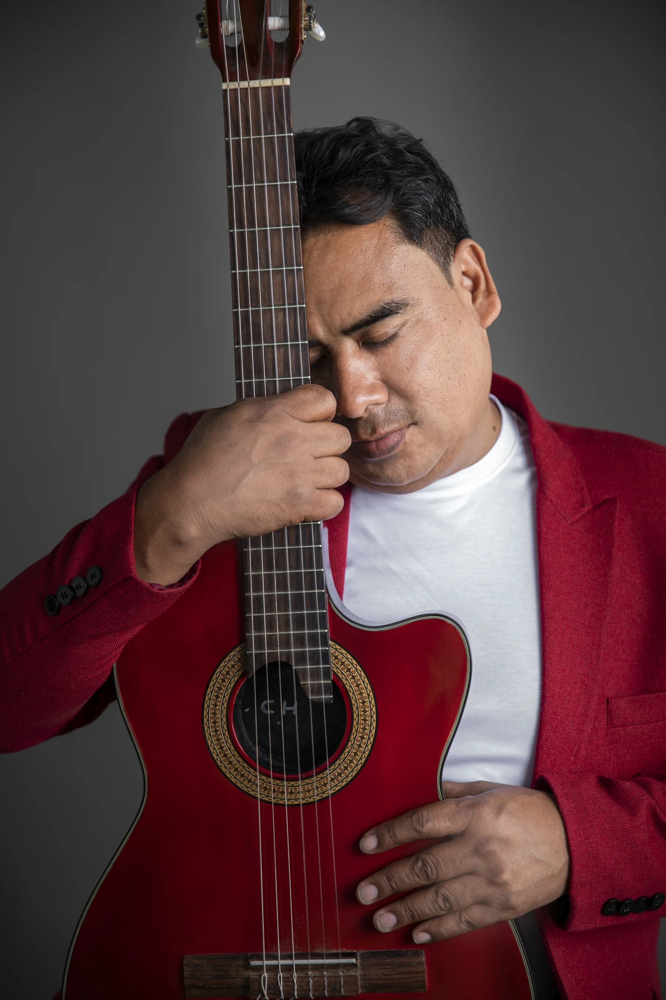
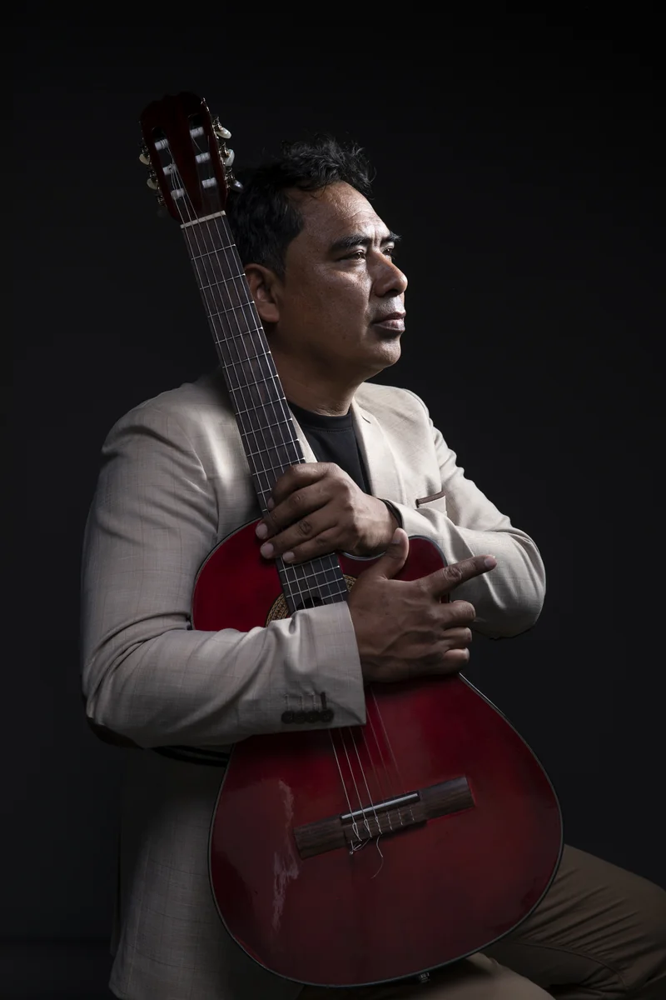
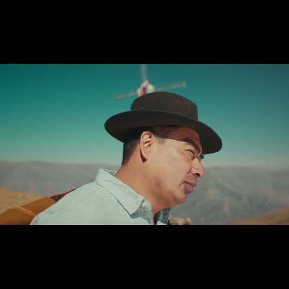
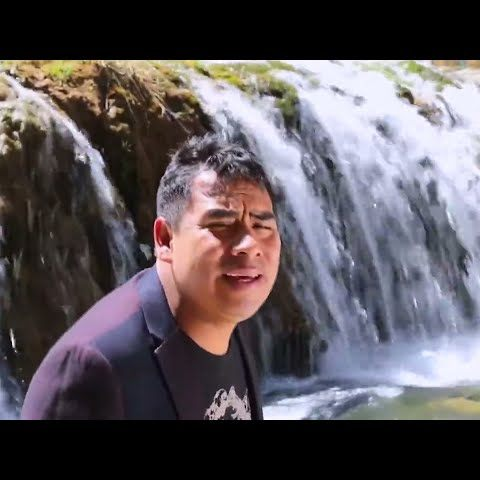
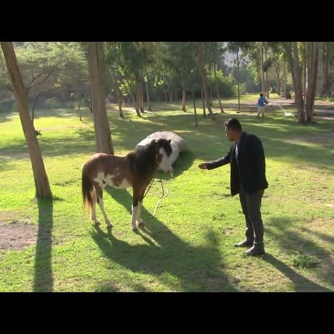
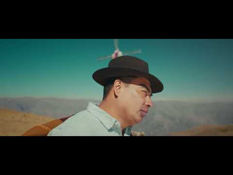
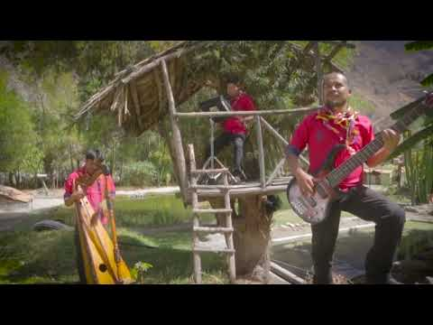
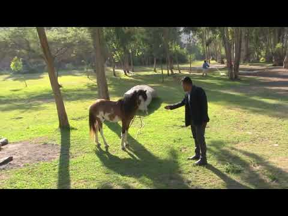

Hasta Siempre Yanaca
Reproducir en YouTube · 07:20 (video)

GRUPO INTERNACIONAL SIN FRONTERAS
Artista y compositor de Música Andina Contemporánea
25 años de trayectoria artística, ha paseado su arte por escenarios nacionales e internacionales.

Retratos de Carlos Kury y su identidad musical.


Carlos Kury nació en la villa primaveral de Ocobamba – Apurímac es uno de los grandes referentes de la música peruana y latinoamericana. Cantautor y compositor, ha construido una trayectoria marcada por canciones que conectan con su público.
Su música combina las vivencias de su juventud, la sensibilidad del campo, historias y sonidos que brotan de su corazón, creando una propuesta de huayno que acarician el alma y otros que hacen bailar, carnavales jocosos y temas para dedicar.
Su pasión por la música le ha permitido compartir escenario con grandes intérpretes de su época y gozar del aplauso de los referentes del huayno de oro, su gran sensibilidad y voz peculiar lo ha llevado a realizar colaboraciones artísticas.
Su carrera con más de dos décadas de trayectoria lo han llevado a escenarios internacionales como: Bolivia, Argentina, Chile y Brasil, interpretando y compartiendo nuevas canciones, manteniendo intacta su pasión por la música y por conectar con su público.
Plataformas digitales
Reproducir en YouTube · 07:20 (video)

Reproducir en YouTube · 02:17 (video)
Reproducir en YouTube · 02:57 (video)

Reproducir en YouTube · 03:42 (video)
Reproducir en YouTube · 03:23 (video)

Reproducir en YouTube · 03:29 (video)
Reproducir en YouTube · 03:29 (video)
Reproducir en YouTube · 03:02 (video)
Reproducir en YouTube · 03:02 (video)



Escucha su música, mira sus videos y sigue sus presentaciones en tus plataformas favoritas.
Hola, te doy la bienvenida. Sigamos conectados a través de la música y el huayno peruano.
Carlos Kury